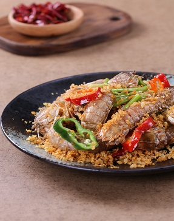

味|
精品美食
一口一味 自然精粹
烹饪精准 营养均衡 贯彻数学家的严谨细致，调味出色 创意新锐 演绎艺术及的匠心风采，独特美味 惬意享受 呈现美食家的精细巧思
-热销菜式-
Hot dish style
谈到吃，最思念的自然就是家的味道，餐厅的大师傅们，可真是可爱至极，精选上等食材，精心烹饪而来，只愿为您献上最温馨的味道
煲仔饭属于粤菜系。 煲仔饭的风味多达百余种,新鲜采购，放入十几种味料腌制，在火候控制方面比较灵活，煲出来的饭也较为香口，齿间留香，回味无穷
喝汤是南方人的习惯，各种汤，如排骨汤、鱼汤和鸡汤等都是餐桌上常见的汤品，各种汤品具有不同的功效
更多菜式
合家菜肴
煲仔饭
营养汤品
全部菜品
凉菜
披萨
西式扒类
汤品
甜品
小食
饮品
沙拉
套餐

香辣花甲
菜名:
简介:
${foods.fintr}
价格:
${foods.fprice}
操作:
+
-
加入订单
立即下单